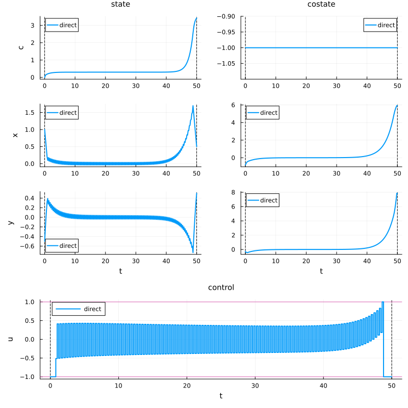
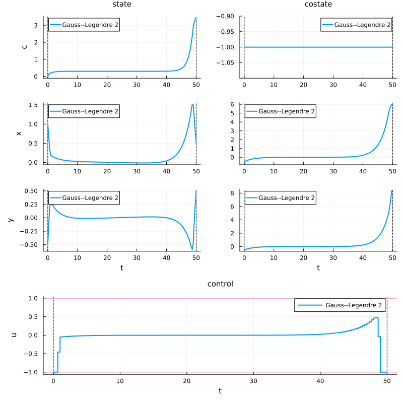
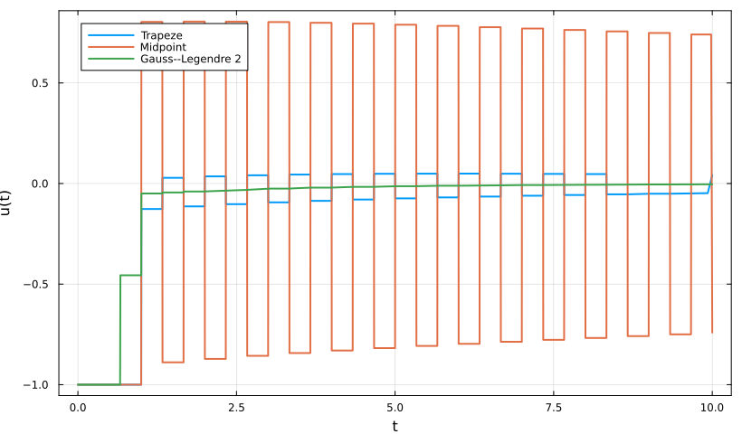
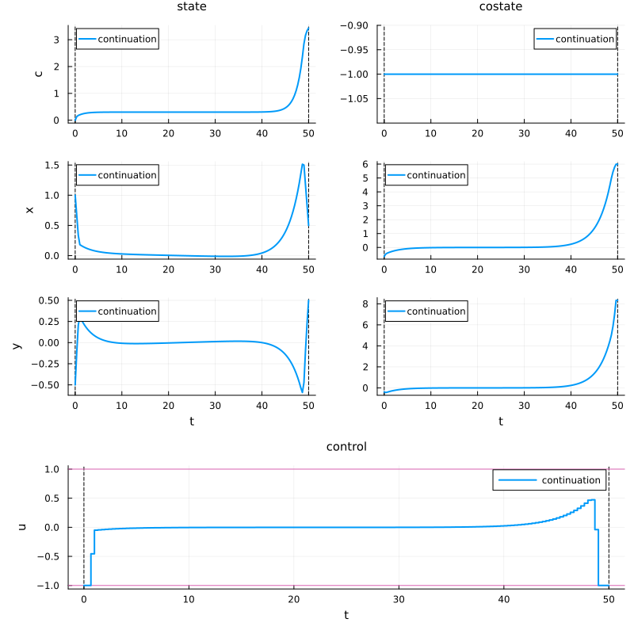
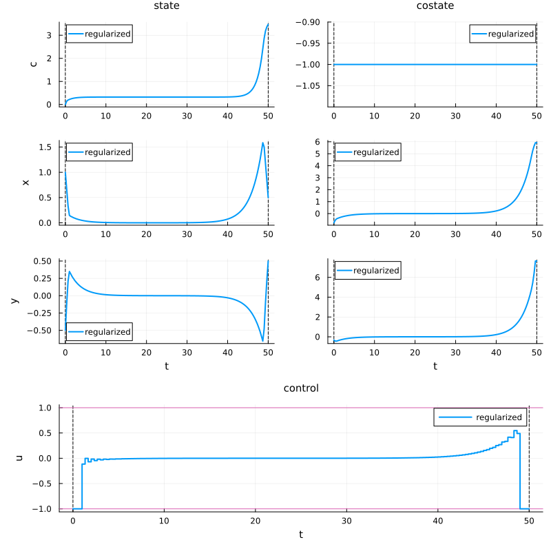
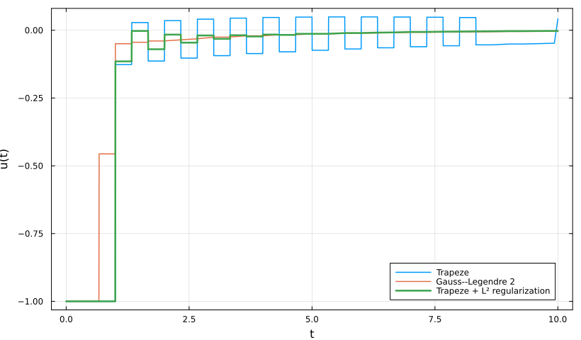

Direct methods
Consider the following optimal control problem:
\[\left\{ \begin{array}{ll} \displaystyle \min_{x,y,u} J(x,y,u) \coloneqq \frac{1}{2}\int_0^T \left(x^2(t) + y^2(t)\right)\,\mathrm dt, \\[1em] \dot x(t) = u(t), \\[0.5em] \displaystyle \dot y(t) =- u(t) - \frac{y(t)}{2}, \\[0.5em] -M \leq u(t) \leq M, \\[0.5em] (x(0), y(0)) = (1, -0.5), \qquad (x(T), y(T)) = (0.5, 0.5). \end{array} \right.\]
The associated stationary problem is
\[\min_{(x,y,u)} \left\{ x^2 + y^2 \;\middle|\; (x,y,u) \in \mathbb R^2 \times [-M,M], \quad u = 0, \quad u - \frac{y}{2} = 0 \right\}.\]
Packages
using OptimalControl
using NLPModelsIpopt
using PlotsAuxiliary formulation
To reduce the optimal control problem to a Mayer form, we introduce an auxiliary state c such that
\[\dot c(t) = \frac{1}{2}\left(x^2(t) + y^2(t)\right), \qquad c(0)=0.\]
Then minimizing
\[\frac{1}{2}\int_0^T \left(x^2(t)+y^2(t)\right)\,\mathrm dt\]
is equivalent to minimizing c(T).
We define
\[s(t) = (c(t),x(t),y(t)).\]
The dynamics can be written as
\[\dot s(t) = F_0(s(t)) + u(t)F_1(s(t)),\]
where
\[F_0(s) = \begin{pmatrix} \frac{1}{2}(x^2+y^2) \\ 0 \\ -\frac{y}{2} \end{pmatrix}, \qquad F_1(s) = \begin{pmatrix} 0 \\ 1 \\ -1 \end{pmatrix}.\]
Problem data
T = 50.0
M = 1.0
s0 = [0.0, 1.0, -0.5]
xT = 0.5
yT = 0.5
nothingF0(s) = [
0.5 * (s[2]^2 + s[3]^2),
0.0,
-s[3] / 2,
]
F1(s) = [
0.0,
1.0,
-1.0,
]
nothingOCP definition
We define the optimal control problem as follows:
ocp = @def begin
t ∈ [0, T], time
s = (c, x, y) ∈ R³, state
u ∈ R, control
s(0) == s0
x(T) == xT
y(T) == yT
-M ≤ u(t) ≤ M
ṡ(t) == F0(s(t)) + u(t) * F1(s(t))
c(T) → min
end
nothingDirect solve
We first solve the problem with the default direct transcription method.
direct_sol = solve(ocp)
nothing▫ This is OptimalControl 2.0.4, solving with: collocation → adnlp → ipopt (cpu)
📦 Configuration:
├─ Discretizer: collocation
├─ Modeler: adnlp
└─ Solver: ipopt
▫ This is Ipopt version 3.14.19, running with linear solver MUMPS 5.9.0.
Number of nonzeros in equality constraint Jacobian...: 3255
Number of nonzeros in inequality constraint Jacobian.: 0
Number of nonzeros in Lagrangian Hessian.............: 1002
Total number of variables............................: 1003
variables with only lower bounds: 0
variables with lower and upper bounds: 250
variables with only upper bounds: 0
Total number of equality constraints.................: 755
Total number of inequality constraints...............: 0
inequality constraints with only lower bounds: 0
inequality constraints with lower and upper bounds: 0
inequality constraints with only upper bounds: 0
iter objective inf_pr inf_du lg(mu) ||d|| lg(rg) alpha_du alpha_pr ls
0 1.0000000e-01 9.00e-01 1.50e-02 0.0 0.00e+00 - 0.00e+00 0.00e+00 0
1 -4.5335615e-01 1.42e-01 9.77e-01 -6.0 1.16e+00 - 4.85e-01 1.00e+00h 1
2 1.1515220e+00 3.18e-02 7.52e-02 -6.3 1.60e+00 - 7.90e-01 1.00e+00h 1
3 3.4676228e+00 7.58e-03 5.85e-04 -1.9 2.41e+00 - 9.96e-01 1.00e+00h 1
4 3.4484725e+00 3.67e-03 7.01e-03 -2.9 3.19e-01 - 9.29e-01 1.00e+00h 1
5 3.4309682e+00 1.34e-03 6.76e-03 -4.0 4.07e-01 - 8.35e-01 1.00e+00h 1
6 3.4249896e+00 3.92e-04 2.05e-03 -4.8 3.87e-01 - 8.83e-01 1.00e+00h 1
7 3.4231980e+00 5.01e-05 5.64e-04 -5.7 2.14e-01 - 8.91e-01 1.00e+00h 1
8 3.4228648e+00 4.34e-06 2.93e-05 -5.4 1.66e-01 - 9.57e-01 1.00e+00h 1
9 3.4228088e+00 1.79e-06 2.94e-06 -6.3 1.15e-01 - 9.93e-01 1.00e+00h 1
iter objective inf_pr inf_du lg(mu) ||d|| lg(rg) alpha_du alpha_pr ls
10 3.4227987e+00 2.49e-07 4.91e-07 -7.3 1.59e-01 - 9.94e-01 1.00e+00h 1
11 3.4227972e+00 4.22e-08 1.71e-07 -8.0 2.15e-01 - 9.97e-01 1.00e+00h 1
12 3.4227974e+00 4.21e-09 1.78e-15 -9.1 1.44e-01 - 1.00e+00 1.00e+00h 1
Number of Iterations....: 12
(scaled) (unscaled)
Objective...............: 3.4227974229772458e+00 3.4227974229772458e+00
Dual infeasibility......: 1.7763568394002505e-15 1.7763568394002505e-15
Constraint violation....: 4.2115044784907241e-09 4.2115044784907241e-09
Variable bound violation: 8.1148197050850968e-09 8.1148197050850968e-09
Complementarity.........: 3.7248665011323705e-09 3.7248665011323705e-09
Overall NLP error.......: 4.2115044784907241e-09 4.2115044784907241e-09
Number of objective function evaluations = 13
Number of objective gradient evaluations = 13
Number of equality constraint evaluations = 13
Number of inequality constraint evaluations = 0
Number of equality constraint Jacobian evaluations = 13
Number of inequality constraint Jacobian evaluations = 0
Number of Lagrangian Hessian evaluations = 12
Total seconds in IPOPT = 7.130
EXIT: Optimal Solution Found.plt_direct = plot(
direct_sol;
label = "direct",
size = (800, 800),
)
plt_direct
The control exhibits chattering: it switches infinitely fast between its bounds on a set of positive measure. This is consistent with a singular arc structure, where the Pontryagin maximum principle fails to determine the optimal control uniquely from the sign of the switching function.
Integration schemes and continuation
Direct methods rely on a discretization of the dynamics on a time grid
\[t_0 < t_1 < \cdots < t_N.\]
Several integration schemes are available.
| Symbol | Method | Order |
|---|---|---|
:euler | Explicit Euler | 1 |
:trapeze | Trapezoidal rule | 2 |
:midpoint | Implicit midpoint | 2 |
:gauss_legendre_2 | Gauss–Legendre, 2 stages | 4 |
:gauss_legendre_3 | Gauss–Legendre, 3 stages | 6 |
A useful numerical strategy is continuation. One solves a sequence of increasingly accurate problems, using each solution as a warm start for the next one:
\[(N_1,\varepsilon_1) \longrightarrow (N_2,\varepsilon_2) \longrightarrow \cdots \longrightarrow (N_k,\varepsilon_k), \qquad N_1 < \cdots < N_k, \qquad \varepsilon_1 > \cdots > \varepsilon_k.\]
We now compare three discretization schemes for a fixed grid size and tolerance.
sol_trapeze = solve(
ocp;
grid_size = 150,
scheme = :trapeze,
tol = 1e-8,
init = direct_sol,
)
sol_midpoint = solve(
ocp;
grid_size = 150,
scheme = :midpoint,
tol = 1e-8,
init = direct_sol,
)
sol_gauss2 = solve(
ocp;
grid_size = 150,
scheme = :gauss_legendre_2,
tol = 1e-8,
init = direct_sol,
)
nothing▫ This is OptimalControl 2.0.4, solving with: collocation → adnlp → ipopt (cpu)
📦 Configuration:
├─ Discretizer: collocation (grid_size = 150, scheme = trapeze)
├─ Modeler: adnlp
└─ Solver: ipopt (tol = 1.0e-8)
▫ This is Ipopt version 3.14.19, running with linear solver MUMPS 5.9.0.
Number of nonzeros in equality constraint Jacobian...: 2405
Number of nonzeros in inequality constraint Jacobian.: 0
Number of nonzeros in Lagrangian Hessian.............: 302
Total number of variables............................: 604
variables with only lower bounds: 0
variables with lower and upper bounds: 151
variables with only upper bounds: 0
Total number of equality constraints.................: 455
Total number of inequality constraints...............: 0
inequality constraints with only lower bounds: 0
inequality constraints with lower and upper bounds: 0
inequality constraints with only upper bounds: 0
iter objective inf_pr inf_du lg(mu) ||d|| lg(rg) alpha_du alpha_pr ls
0 3.4227974e+00 1.88e-01 6.77e-02 0.0 0.00e+00 - 0.00e+00 0.00e+00 0
1 3.2976116e+00 6.78e-02 6.82e-02 -6.0 2.59e-01 - 6.08e-01 6.38e-01h 1
2 3.8447320e+00 1.61e-03 3.35e-02 -2.5 5.57e-01 - 9.23e-01 1.00e+00h 1
3 3.4470943e+00 3.03e-03 1.91e-02 -2.5 4.90e-01 - 7.85e-01 1.00e+00f 1
4 3.4175502e+00 1.11e-03 1.15e-04 -3.0 2.64e-01 - 9.98e-01 1.00e+00h 1
5 3.4644438e+00 1.19e-04 9.63e-05 -4.3 1.16e-01 - 9.90e-01 1.00e+00h 1
6 3.4673952e+00 8.60e-06 9.63e-05 -5.7 9.47e-02 - 9.39e-01 1.00e+00h 1
7 3.4673944e+00 9.33e-07 1.75e-05 -6.4 8.99e-02 - 9.46e-01 1.00e+00h 1
8 3.4673932e+00 7.07e-08 9.60e-08 -7.2 7.64e-02 - 9.99e-01 1.00e+00h 1
9 3.4673934e+00 2.87e-09 2.66e-15 -8.8 3.33e-02 - 1.00e+00 1.00e+00h 1
Number of Iterations....: 9
(scaled) (unscaled)
Objective...............: 3.4673934263533672e+00 3.4673934263533672e+00
Dual infeasibility......: 2.6645352591003757e-15 2.6645352591003757e-15
Constraint violation....: 2.8711911181922289e-09 2.8711911181922289e-09
Variable bound violation: 6.5271843485703585e-09 6.5271843485703585e-09
Complementarity.........: 5.2688865211347940e-09 5.2688865211347940e-09
Overall NLP error.......: 5.2688865211347940e-09 5.2688865211347940e-09
Number of objective function evaluations = 10
Number of objective gradient evaluations = 10
Number of equality constraint evaluations = 10
Number of inequality constraint evaluations = 0
Number of equality constraint Jacobian evaluations = 10
Number of inequality constraint Jacobian evaluations = 0
Number of Lagrangian Hessian evaluations = 9
Total seconds in IPOPT = 2.687
EXIT: Optimal Solution Found.
▫ This is OptimalControl 2.0.4, solving with: collocation → adnlp → ipopt (cpu)
📦 Configuration:
├─ Discretizer: collocation (grid_size = 150, scheme = midpoint)
├─ Modeler: adnlp
└─ Solver: ipopt (tol = 1.0e-8)
▫ This is Ipopt version 3.14.19, running with linear solver MUMPS 5.9.0.
Number of nonzeros in equality constraint Jacobian...: 1955
Number of nonzeros in inequality constraint Jacobian.: 0
Number of nonzeros in Lagrangian Hessian.............: 602
Total number of variables............................: 603
variables with only lower bounds: 0
variables with lower and upper bounds: 150
variables with only upper bounds: 0
Total number of equality constraints.................: 455
Total number of inequality constraints...............: 0
inequality constraints with only lower bounds: 0
inequality constraints with lower and upper bounds: 0
inequality constraints with only upper bounds: 0
iter objective inf_pr inf_du lg(mu) ||d|| lg(rg) alpha_du alpha_pr ls
0 3.4227974e+00 4.08e-01 9.56e-02 0.0 0.00e+00 - 0.00e+00 0.00e+00 0
1 3.3783647e+00 2.92e-01 2.74e-01 -6.0 5.62e-01 - 3.78e-01 2.84e-01h 1
2 3.5999190e+00 9.38e-03 9.94e-02 -1.8 1.06e+00 - 8.71e-01 1.00e+00h 1
3 3.6574679e+00 3.86e-03 1.90e-02 -3.1 1.47e-01 - 8.01e-01 1.00e+00h 1
4 3.3089390e+00 3.17e-03 5.33e-03 -2.6 4.28e-01 - 9.08e-01 1.00e+00f 1
5 3.3859855e+00 5.97e-04 3.62e-03 -3.7 1.64e-01 - 9.26e-01 1.00e+00h 1
6 3.4030713e+00 1.46e-04 2.52e-03 -4.5 1.95e-01 - 8.68e-01 1.00e+00h 1
7 3.4033205e+00 2.63e-05 8.59e-05 -4.7 2.04e-01 - 9.84e-01 1.00e+00h 1
8 3.4031119e+00 1.18e-05 3.10e-06 -5.5 2.26e-01 - 9.96e-01 1.00e+00h 1
9 3.4030640e+00 3.82e-06 2.98e-05 -6.3 2.38e-01 - 9.95e-01 8.69e-01h 1
iter objective inf_pr inf_du lg(mu) ||d|| lg(rg) alpha_du alpha_pr ls
10 3.4030406e+00 1.65e-06 8.88e-16 -7.1 2.72e-01 - 1.00e+00 1.00e+00h 1
11 3.4030439e+00 2.12e-07 2.32e-07 -8.1 1.52e-01 - 9.97e-01 1.00e+00h 1
12 3.4030457e+00 1.80e-08 1.78e-15 -9.5 5.14e-02 - 1.00e+00 1.00e+00h 1
13 3.4030460e+00 2.97e-10 8.88e-16 -11.0 7.22e-03 - 1.00e+00 1.00e+00h 1
Number of Iterations....: 13
(scaled) (unscaled)
Objective...............: 3.4030459723334312e+00 3.4030459723334312e+00
Dual infeasibility......: 8.8817841970012523e-16 8.8817841970012523e-16
Constraint violation....: 2.9688651537185251e-10 2.9688651537185251e-10
Variable bound violation: 9.9824071231324751e-09 9.9824071231324751e-09
Complementarity.........: 2.5822714020376765e-10 2.5822714020376765e-10
Overall NLP error.......: 2.9688651537185251e-10 2.9688651537185251e-10
Number of objective function evaluations = 14
Number of objective gradient evaluations = 14
Number of equality constraint evaluations = 14
Number of inequality constraint evaluations = 0
Number of equality constraint Jacobian evaluations = 14
Number of inequality constraint Jacobian evaluations = 0
Number of Lagrangian Hessian evaluations = 13
Total seconds in IPOPT = 0.024
EXIT: Optimal Solution Found.
▫ This is OptimalControl 2.0.4, solving with: collocation → adnlp → ipopt (cpu)
📦 Configuration:
├─ Discretizer: collocation (grid_size = 150, scheme = gauss_legendre_2)
├─ Modeler: adnlp
└─ Solver: ipopt (tol = 1.0e-8)
▫ This is Ipopt version 3.14.19, running with linear solver MUMPS 5.9.0.
Number of nonzeros in equality constraint Jacobian...: 6005
Number of nonzeros in inequality constraint Jacobian.: 0
Number of nonzeros in Lagrangian Hessian.............: 1800
Total number of variables............................: 1653
variables with only lower bounds: 0
variables with lower and upper bounds: 300
variables with only upper bounds: 0
Total number of equality constraints.................: 1355
Total number of inequality constraints...............: 0
inequality constraints with only lower bounds: 0
inequality constraints with lower and upper bounds: 0
inequality constraints with only upper bounds: 0
iter objective inf_pr inf_du lg(mu) ||d|| lg(rg) alpha_du alpha_pr ls
0 3.4227974e+00 1.36e+00 3.44e-02 0.0 0.00e+00 - 0.00e+00 0.00e+00 0
1 3.3488784e+00 8.39e-02 4.59e-02 -6.0 1.36e+00 - 9.11e-01 1.00e+00h 1
2 3.4709577e+00 2.61e-04 5.45e-03 -3.1 1.22e-01 - 9.56e-01 1.00e+00h 1
3 3.4282674e+00 1.07e-03 6.52e-04 -3.8 1.73e-01 - 8.72e-01 1.00e+00h 1
4 3.4352258e+00 3.18e-04 8.17e-04 -4.6 2.07e-01 - 8.26e-01 1.00e+00h 1
5 3.4331725e+00 2.50e-04 4.83e-06 -4.5 4.18e-01 - 9.95e-01 1.00e+00h 1
6 3.4336483e+00 2.00e-05 7.32e-06 -5.0 2.16e-01 - 9.42e-01 1.00e+00h 1
7 3.4337942e+00 1.67e-05 3.04e-05 -7.0 1.66e-01 - 8.20e-01 9.76e-01h 1
8 3.4337960e+00 4.05e-06 2.12e-06 -6.4 1.55e-01 - 9.87e-01 1.00e+00h 1
9 3.4337899e+00 1.39e-06 6.50e-06 -7.3 1.57e-01 - 1.00e+00 8.27e-01h 1
iter objective inf_pr inf_du lg(mu) ||d|| lg(rg) alpha_du alpha_pr ls
10 3.4337877e+00 6.43e-07 8.88e-16 -8.3 1.62e-01 - 1.00e+00 1.00e+00h 1
11 3.4337886e+00 3.09e-08 6.66e-16 -9.7 5.05e-02 - 1.00e+00 1.00e+00h 1
12 3.4337886e+00 2.05e-10 1.22e-15 -11.0 5.10e-03 - 1.00e+00 1.00e+00h 1
Number of Iterations....: 12
(scaled) (unscaled)
Objective...............: 3.4337886468288636e+00 3.4337886468288636e+00
Dual infeasibility......: 1.2212453270876722e-15 1.2212453270876722e-15
Constraint violation....: 2.0515944498811223e-10 2.0515944498811223e-10
Variable bound violation: 9.9708195033798575e-09 9.9708195033798575e-09
Complementarity.........: 3.8397046141313027e-11 3.8397046141313027e-11
Overall NLP error.......: 2.0515944498811223e-10 2.0515944498811223e-10
Number of objective function evaluations = 13
Number of objective gradient evaluations = 13
Number of equality constraint evaluations = 13
Number of inequality constraint evaluations = 0
Number of equality constraint Jacobian evaluations = 13
Number of inequality constraint Jacobian evaluations = 0
Number of Lagrangian Hessian evaluations = 12
Total seconds in IPOPT = 4.274
EXIT: Optimal Solution Found.plt_gauss2 = plot(
sol_gauss2;
label = "Gauss--Legendre 2",
size = (800, 800),
)
plt_gauss2
Comparison of the controls
We compare the controls obtained with the different schemes on the initial time interval.
u_trapeze(t) = control(sol_trapeze)(t)
u_midpoint(t) = control(sol_midpoint)(t)
u_gauss2(t) = control(sol_gauss2)(t)
plt_controls = plot(
u_trapeze,
0,
10;
label = "Trapeze",
linewidth = 2,
xlabel = "t",
ylabel = "u(t)",
frame = :box,
grid = true,
size = (820, 480),
)
plot!(
plt_controls,
u_midpoint,
0,
10;
label = "Midpoint",
linewidth = 2,
)
plot!(
plt_controls,
u_gauss2,
0,
10;
label = "Gauss--Legendre 2",
linewidth = 2,
)
plt_controls
Continuation example
We can also explicitly perform a continuation procedure by first solving a coarse problem and then refining the discretization.
sol_continuation = solve(
ocp;
grid_size = 50,
scheme = :midpoint,
tol = 1e-4,
)
sol_continuation = solve(
ocp;
grid_size = 150,
scheme = :gauss_legendre_2,
tol = 1e-8,
init = sol_continuation,
)
nothing▫ This is OptimalControl 2.0.4, solving with: collocation → adnlp → ipopt (cpu)
📦 Configuration:
├─ Discretizer: collocation (grid_size = 50, scheme = midpoint)
├─ Modeler: adnlp
└─ Solver: ipopt (tol = 0.0001)
▫ This is Ipopt version 3.14.19, running with linear solver MUMPS 5.9.0.
Number of nonzeros in equality constraint Jacobian...: 655
Number of nonzeros in inequality constraint Jacobian.: 0
Number of nonzeros in Lagrangian Hessian.............: 202
Total number of variables............................: 203
variables with only lower bounds: 0
variables with lower and upper bounds: 50
variables with only upper bounds: 0
Total number of equality constraints.................: 155
Total number of inequality constraints...............: 0
inequality constraints with only lower bounds: 0
inequality constraints with lower and upper bounds: 0
inequality constraints with only upper bounds: 0
iter objective inf_pr inf_du lg(mu) ||d|| lg(rg) alpha_du alpha_pr ls
0 1.0000000e-01 9.00e-01 7.19e-02 0.0 0.00e+00 - 0.00e+00 0.00e+00 0
1 -3.8757262e+00 2.03e+00 1.96e+00 -6.0 4.35e+00 - 4.92e-01 1.00e+00f 1
2 -2.6832028e+01 1.82e+00 7.22e-02 -0.8 2.56e+01 - 9.00e-01 1.00e+00f 1
3 3.2025438e+00 1.19e-02 8.90e-04 -1.7 3.00e+01 - 9.95e-01 1.00e+00h 1
4 3.1549430e+00 3.43e-03 3.41e-03 -2.7 1.98e-01 - 9.51e-01 1.00e+00h 1
5 3.1436918e+00 5.11e-04 2.10e-04 -3.4 1.56e-01 - 9.96e-01 1.00e+00h 1
6 3.1427332e+00 1.99e-04 1.12e-05 -4.3 1.67e-01 - 1.00e+00 1.00e+00h 1
7 3.1425296e+00 4.58e-05 8.88e-16 -5.4 1.89e-01 - 1.00e+00 1.00e+00h 1
Number of Iterations....: 7
(scaled) (unscaled)
Objective...............: 3.1425296476072222e+00 3.1425296476072222e+00
Dual infeasibility......: 8.8817841970012523e-16 8.8817841970012523e-16
Constraint violation....: 4.5802848910314609e-05 4.5802848910314609e-05
Variable bound violation: 0.0000000000000000e+00 0.0000000000000000e+00
Complementarity.........: 4.4255095127725693e-05 4.4255095127725693e-05
Overall NLP error.......: 4.5802848910314609e-05 4.5802848910314609e-05
Number of objective function evaluations = 8
Number of objective gradient evaluations = 8
Number of equality constraint evaluations = 8
Number of inequality constraint evaluations = 0
Number of equality constraint Jacobian evaluations = 8
Number of inequality constraint Jacobian evaluations = 0
Number of Lagrangian Hessian evaluations = 7
Total seconds in IPOPT = 0.007
EXIT: Optimal Solution Found.
▫ This is OptimalControl 2.0.4, solving with: collocation → adnlp → ipopt (cpu)
📦 Configuration:
├─ Discretizer: collocation (grid_size = 150, scheme = gauss_legendre_2)
├─ Modeler: adnlp
└─ Solver: ipopt (tol = 1.0e-8)
▫ This is Ipopt version 3.14.19, running with linear solver MUMPS 5.9.0.
Number of nonzeros in equality constraint Jacobian...: 6005
Number of nonzeros in inequality constraint Jacobian.: 0
Number of nonzeros in Lagrangian Hessian.............: 1800
Total number of variables............................: 1653
variables with only lower bounds: 0
variables with lower and upper bounds: 300
variables with only upper bounds: 0
Total number of equality constraints.................: 1355
Total number of inequality constraints...............: 0
inequality constraints with only lower bounds: 0
inequality constraints with lower and upper bounds: 0
inequality constraints with only upper bounds: 0
iter objective inf_pr inf_du lg(mu) ||d|| lg(rg) alpha_du alpha_pr ls
0 3.1425296e+00 1.18e+00 3.08e-02 0.0 0.00e+00 - 0.00e+00 0.00e+00 0
1 3.4873362e+00 9.16e-02 5.14e-02 -6.0 1.15e+00 - 9.34e-01 1.00e+00h 1
2 3.6626396e+00 3.08e-03 1.20e-02 -2.6 1.75e-01 - 9.06e-01 1.00e+00h 1
3 3.3326399e+00 1.10e-02 8.88e-16 -2.8 3.79e-01 - 1.00e+00 1.00e+00h 1
4 3.4272081e+00 2.52e-03 6.66e-16 -3.5 5.13e-01 - 1.00e+00 1.00e+00h 1
5 3.4339425e+00 7.49e-04 9.33e-04 -5.6 3.01e-01 - 8.37e-01 1.00e+00h 1
6 3.4339417e+00 7.49e-05 2.39e-04 -5.0 1.89e-01 - 8.63e-01 1.00e+00h 1
7 3.4338322e+00 3.50e-05 1.10e-06 -5.6 1.98e-01 - 9.94e-01 1.00e+00h 1
8 3.4337945e+00 1.29e-05 1.59e-08 -6.4 1.81e-01 - 1.00e+00 1.00e+00h 1
9 3.4337895e+00 3.48e-06 2.49e-05 -7.4 1.71e-01 - 1.00e+00 7.60e-01h 1
iter objective inf_pr inf_du lg(mu) ||d|| lg(rg) alpha_du alpha_pr ls
10 3.4337876e+00 9.10e-07 7.22e-16 -8.3 1.66e-01 - 1.00e+00 1.00e+00h 1
11 3.4337886e+00 4.00e-08 5.00e-16 -9.6 4.88e-02 - 1.00e+00 1.00e+00h 1
12 3.4337886e+00 2.99e-10 6.66e-16 -11.0 5.39e-03 - 1.00e+00 1.00e+00h 1
Number of Iterations....: 12
(scaled) (unscaled)
Objective...............: 3.4337886467677308e+00 3.4337886467677308e+00
Dual infeasibility......: 6.6613381477509392e-16 6.6613381477509392e-16
Constraint violation....: 2.9887448071974632e-10 2.9887448071974632e-10
Variable bound violation: 9.9708195033798575e-09 9.9708195033798575e-09
Complementarity.........: 6.1520065842839209e-11 6.1520065842839209e-11
Overall NLP error.......: 2.9887448071974632e-10 2.9887448071974632e-10
Number of objective function evaluations = 13
Number of objective gradient evaluations = 13
Number of equality constraint evaluations = 13
Number of inequality constraint evaluations = 0
Number of equality constraint Jacobian evaluations = 13
Number of inequality constraint Jacobian evaluations = 0
Number of Lagrangian Hessian evaluations = 12
Total seconds in IPOPT = 0.063
EXIT: Optimal Solution Found.plt_continuation = plot(
sol_continuation;
label = "continuation",
size = (800, 800),
)
plt_continuation
Reducing control chattering
When the optimal control is bang-bang or involves a singular arc, direct methods inevitably produce rapid oscillations at the grid scale — the discretized control switches between its bounds to approximate an infinite switching frequency it cannot resolve.
A standard remedy is to add a small quadratic regularization term to the cost:
\[J_\varepsilon(x,y,u) = \frac{1}{2}\int_0^T \left(x^2(t)+y^2(t)\right)\mathrm{d}t + \varepsilon \int_0^T u^2(t)\,\mathrm{d}t,\]
where $0 < \varepsilon \ll 1$. The penalty on $u^2$ makes the Hamiltonian strictly concave in $u$, which regularizes the bang-bang structure and yields a smooth, numerically well-behaved control. The solution then converges to the original bang-bang optimal control as $\varepsilon \to 0$.
In the auxiliary formulation, this corresponds to replacing the cost-state dynamics by
\[\dot c(t) = \frac{1}{2}\left(x^2(t)+y^2(t)\right) + \varepsilon u^2(t).\]
ε = 1e-3
ocp_regularized = @def begin
t ∈ [0, T], time
s = (c, x, y) ∈ R³, state
u ∈ R, control
s(0) == s0
x(T) == xT
y(T) == yT
-M ≤ u(t) ≤ M
ṡ(t) == [
0.5 * (x(t)^2 + y(t)^2) + ε * u(t)^2,
u(t),
-u(t) - y(t) / 2,
]
c(T) → min
end
nothingsol_regularized = solve(
ocp_regularized;
grid_size = 150,
scheme = :trapeze,
tol = 1e-8,
init = sol_trapeze,
)
nothing▫ This is OptimalControl 2.0.4, solving with: collocation → adnlp → ipopt (cpu)
📦 Configuration:
├─ Discretizer: collocation (grid_size = 150, scheme = trapeze)
├─ Modeler: adnlp
└─ Solver: ipopt (tol = 1.0e-8)
▫ This is Ipopt version 3.14.19, running with linear solver MUMPS 5.9.0.
Number of nonzeros in equality constraint Jacobian...: 2405
Number of nonzeros in inequality constraint Jacobian.: 0
Number of nonzeros in Lagrangian Hessian.............: 453
Total number of variables............................: 604
variables with only lower bounds: 0
variables with lower and upper bounds: 151
variables with only upper bounds: 0
Total number of equality constraints.................: 455
Total number of inequality constraints...............: 0
inequality constraints with only lower bounds: 0
inequality constraints with lower and upper bounds: 0
inequality constraints with only upper bounds: 0
iter objective inf_pr inf_du lg(mu) ||d|| lg(rg) alpha_du alpha_pr ls
0 3.4673934e+00 3.33e-03 6.83e-02 0.0 0.00e+00 - 0.00e+00 0.00e+00 0
1 3.4772518e+00 2.19e-05 1.73e-02 -6.0 2.39e-02 - 9.64e-01 1.00e+00h 1
2 3.4716115e+00 1.14e-05 8.45e-04 -7.4 1.90e-02 - 9.84e-01 1.00e+00h 1
3 3.4700449e+00 1.26e-06 1.69e-05 -4.8 2.69e-02 - 9.94e-01 1.00e+00h 1
4 3.4698659e+00 5.60e-07 1.78e-15 -6.4 4.10e-02 - 1.00e+00 1.00e+00h 1
5 3.4698926e+00 1.64e-09 2.37e-08 -11.0 2.16e-03 - 9.97e-01 1.00e+00h 1
6 3.4698926e+00 1.83e-14 8.88e-16 -11.0 7.40e-06 - 1.00e+00 1.00e+00h 1
Number of Iterations....: 6
(scaled) (unscaled)
Objective...............: 3.4698926366565801e+00 3.4698926366565801e+00
Dual infeasibility......: 8.8817841970012523e-16 8.8817841970012523e-16
Constraint violation....: 1.8318679906315083e-14 1.8318679906315083e-14
Variable bound violation: 9.9757995197791161e-09 9.9757995197791161e-09
Complementarity.........: 1.0114735855164315e-11 1.0114735855164315e-11
Overall NLP error.......: 1.0114735855164315e-11 1.0114735855164315e-11
Number of objective function evaluations = 7
Number of objective gradient evaluations = 7
Number of equality constraint evaluations = 7
Number of inequality constraint evaluations = 0
Number of equality constraint Jacobian evaluations = 7
Number of inequality constraint Jacobian evaluations = 0
Number of Lagrangian Hessian evaluations = 6
Total seconds in IPOPT = 2.865
EXIT: Optimal Solution Found.plt_regularized = plot(
sol_regularized;
label = "regularized",
size = (800, 800),
)
plt_regularized
We now compare the regularized control with the controls obtained before.
u_regularized(t) = control(sol_regularized)(t)
plt_regularized_control = plot(
u_trapeze,
0,
10;
label = "Trapeze",
linewidth = 1.5,
xlabel = "t",
ylabel = "u(t)",
frame = :box,
grid = true,
size = (820, 480),
)
plot!(
plt_regularized_control,
u_gauss2,
0,
10;
label = "Gauss--Legendre 2",
linewidth = 1.5,
)
plot!(
plt_regularized_control,
u_regularized,
0,
10;
label = "Trapeze + L² regularization",
linewidth = 2.5,
)
plt_regularized_control
The regularized problem is a perturbation of the original — its solution differs from the true bang-bang control, but converges to it as $\varepsilon \to 0$. In practice, it is used either as a smoother when the bang-bang structure makes the direct solve unstable, or as a warm start for a subsequent solve at $\varepsilon = 0$.